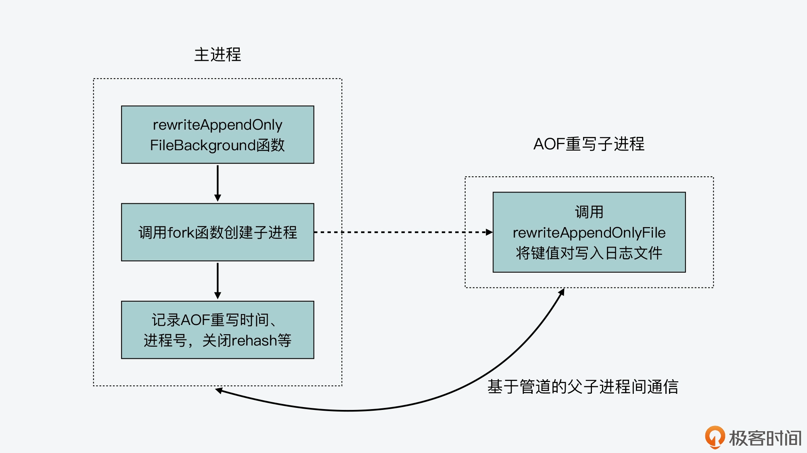

- 00 开篇词 阅读Redis源码能给你带来什么？.md.html
- 01 带你快速攻略Redis源码的整体架构.md.html
- 02 键值对中字符串的实现，用char还是结构体？.md.html
- 03 如何实现一个性能优异的Hash表？.md.html
- 04 内存友好的数据结构该如何细化设计？.md.html
- 05 有序集合为何能同时支持点查询和范围查询？.md.html
- 06 从ziplist到quicklist，再到listpack的启发.md.html
- 07 为什么Stream使用了Radix Tree？.md.html
- 08 Redis server启动后会做哪些操作？.md.html
- 09 Redis事件驱动框架（上）：何时使用select、poll、epoll？.md.html
- 10 Redis事件驱动框架（中）：Redis实现了Reactor模型吗？.md.html
- 11 Redis事件驱动框架（下）：Redis有哪些事件？.md.html
- 12 Redis真的是单线程吗？.md.html
- 13 Redis 6.0多IO线程的效率提高了吗？.md.html
- 14 从代码实现看分布式锁的原子性保证.md.html
- 15 为什么LRU算法原理和代码实现不一样？.md.html
- 16 LFU算法和其他算法相比有优势吗？.md.html
- 17 Lazy Free会影响缓存替换吗？.md.html
- 18 如何生成和解读RDB文件？.md.html
- 19 AOF重写（上）：触发时机与重写的影响.md.html
- 20 AOF重写（下）：重写时的新写操作记录在哪里？.md.html
- 21 主从复制：基于状态机的设计与实现.md.html
- 22 哨兵也和Redis实例一样初始化吗？.md.html
- 23 从哨兵Leader选举学习Raft协议实现（上）.md.html
- 24 从哨兵Leader选举学习Raft协议实现（下）.md.html
- 25 PubSub在主从故障切换时是如何发挥作用的？.md.html
- 26 从Ping-Pong消息学习Gossip协议的实现.md.html
- 27 从MOVED、ASK看集群节点如何处理命令？.md.html
- 28 Redis Cluster数据迁移会阻塞吗？.md.html
- 29 如何正确实现循环缓冲区？.md.html
- 30 如何在系统中实现延迟监控？.md.html
- 31 从Module的实现学习动态扩展功能.md.html
- 32 如何在一个系统中实现单元测试？.md.html
- 结束语 Redis源码阅读，让我们从新开始.md.html
- 捐赠
19 AOF重写（上）：触发时机与重写的影响
我们知道，Redis 除了使用内存快照 RDB 来保证数据可靠性之外，还可以使用 AOF 日志。不过，RDB 文件是将某一时刻的内存数据保存成一个文件，而 AOF 日志则会记录接收到的所有写操作。如果 Redis server 的写请求很多，那么 AOF 日志中记录的操作也会越来越多，进而就导致 AOF 日志文件越来越大。
所以，为了避免产生过大的 AOF 日志文件，Redis 会对 AOF 文件进行重写，也就是针对当前数据库中每个键值对的最新内容，记录它的插入操作，而不再记录它的历史写操作了。这样一来，重写后的 AOF 日志文件就能变小了。
那么，AOF 重写在哪些时候会被触发呢？以及 AOF 重写需要写文件，这个过程会阻塞 Redis 的主线程，进而影响 Redis 的性能吗？
今天这节课，我就来给你介绍下 AOF 重写的代码实现过程，通过了解它的代码实现，我们就可以清楚地了解到 AOF 重写过程的表现，以及它对 Redis server 的影响。这样，当你再遇到 Redis server 性能变慢的问题时，你就可以排查是否是 AOF 重写导致的了。
好，接下来，我们先来看下 AOF 重写函数以及它的触发时机。
AOF 重写函数与触发时机
首先，实现 AOF 重写的函数是 rewriteAppendOnlyFileBackground，它是在aof.c文件中实现的。在这个函数中，会调用 fork 函数创建一个 AOF 重写子进程，来实际执行重写操作。关于这个函数的具体实现，我稍后会给你详细介绍。这里呢，我们先来看看，这个函数会被哪些函数调用，这样我们就可以了解 AOF 重写的触发时机了。
实际上，rewriteAppendOnlyFileBackground 函数一共会在三个函数中被调用。
第一个是 bgrewriteaofCommand 函数。这个函数是在 aof.c 文件中实现的，对应了我们在 Redis server 上执行 bgrewriteaof 命令，也就是说，我们手动触发了 AOF rewrite 的执行。
不过，即使我们手动执行了 bgrewriteaof 命令，bgrewriteaofCommand 函数也会根据以下两个条件，来判断是否实际执行 AOF 重写。
- 条件一：当前是否已经有 AOF 重写的子进程正在执行。如果有的话，那么 bgrewriteaofCommand 函数就不再执行 AOF 重写了。
- 条件二：当前是否有创建 RDB 的子进程正在执行。如果有的话，bgrewriteaofCommand 函数会把全局变量 server 的 aof_rewrite_scheduled 成员变量设置为 1，这个标志表明 Redis server 已经将 AOF 重写设为待调度运行，等后续条件满足时，它就会实际执行 AOF 重写（我们一会儿就会看到，当 aof_rewrite_scheduled 设置为 1 以后，Redis server 会在哪些条件下实际执行重写操作）。
所以这也就是说，只有当前既没有 AOF 重写子进程也没有 RDB 子进程，bgrewriteaofCommand 函数才会立即调用 rewriteAppendOnlyFileBackground 函数，实际执行 AOF 重写。
以下代码展示了 bgrewriteaofCommand 函数的基本执行逻辑，你可以看下。
void bgrewriteaofCommand(client *c) {
if (server.aof_child_pid != -1) {
.. //有AOF重写子进程，因此不执行重写
} else if (server.rdb_child_pid != -1) {
server.aof_rewrite_scheduled = 1; //有RDB子进程，将AOF重写设置为待调度运行
...
} else if (rewriteAppendOnlyFileBackground() == C_OK) { //实际执行AOF重写
...
}
...
}
第二个是 startAppendOnly 函数。这个函数也是在 aof.c 文件中实现的，它本身会被 configSetCommand 函数（在config.c文件中）和 restartAOFAfterSYNC 函数（在replication.c文件中）调用。
首先，对于 configSetCommand 函数来说，它对应了我们在 Redis 中执行 config 命令启用 AOF 功能，如下所示：
config set appendonly yes
这样，一旦 AOF 功能启用后，configSetCommand 函数就会调用 startAppendOnly 函数，执行一次 AOF 重写。
而对于 restartAOFAfterSYNC 函数来说，它会在主从节点的复制过程中被调用。简单来说，就是当主从节点在进行复制时，如果从节点的 AOF 选项被打开，那么在加载解析 RDB 文件时，AOF 选项就会被关闭。然后，无论从节点是否成功加载了 RDB 文件，restartAOFAfterSYNC 函数都会被调用，用来恢复被关闭的 AOF 功能。
那么在这个过程中，restartAOFAfterSYNC 函数就会调用 startAppendOnly 函数，并进一步调用 rewriteAppendOnlyFileBackground 函数，来执行一次 AOF 重写。
这里你要注意，和 bgrewriteaofCommand 函数类似，startAppendOnly 函数也会判断当前是否有 RDB 子进程在执行，如果有的话，它会将 AOF 重写设置为待调度执行。除此之外，如果 startAppendOnly 函数检测到有 AOF 重写子进程在执行，那么它就会把该子进程先 kill 掉，然后再调用 rewriteAppendOnlyFileBackground 函数进行 AOF 重写。
所以到这里，我们其实可以发现，无论是 bgrewriteaofCommand 函数还是 startAppendOnly 函数，当它们检测到有 RDB 子进程在执行的时候，就会把 aof_rewrite_scheduled 变量设置为 1，这表示 AOF 重写操作将在条件满足时再被执行。
那么，Redis server 什么时候会再检查 AOF 重写操作的条件是否满足呢？这就和 rewriteAppendOnlyFileBackground 函数被调用的第三个函数，serverCron 函数相关了。
第三个是 serverCron 函数。在 Redis server 运行时，serverCron 函数是会被周期性执行的。然后它在执行的过程中，会做两次判断来决定是否执行 AOF 重写。
首先，serverCron 函数会检测当前是否没有 RDB 子进程和 AOF 重写子进程在执行，并检测是否有 AOF 重写操作被设置为了待调度执行，也就是 aof_rewrite_scheduled 变量值为 1。
如果这三个条件都满足，那么 serverCron 函数就会调用 rewriteAppendOnlyFileBackground 函数来执行 AOF 重写。serverCron 函数里面的这部分执行逻辑如下所示：
//如果没有RDB子进程，也没有AOF重写子进程，并且AOF重写被设置为待调度执行，那么调用rewriteAppendOnlyFileBackground函数进行AOF重写
//如果没有RDB子进程，也没有AOF重写子进程，并且AOF重写被设置为待调度执行，那么调用rewriteAppendOnlyFileBackground函数进行AOF重写
if (server.rdb_child_pid == -1 && server.aof_child_pid == -1 &&
server.aof_rewrite_scheduled)
{
rewriteAppendOnlyFileBackground();
}
事实上，这里的代码也回答了我们刚才提到的问题：待调度执行的 AOF 重写会在什么时候执行？
其实，如果 AOF 重写没法立即执行的话，我们也不用担心。因为只要 aof_rewrite_scheduled 变量被设置为 1 了，那么 serverCron 函数就默认会每 100 毫秒执行并检测这个变量值。所以，如果正在执行的 RDB 子进程和 AOF 重写子进程结束了之后，被调度执行的 AOF 重写就可以很快得到执行。
其次，即使 AOF 重写操作没有被设置为待调度执行，serverCron 函数也会周期性判断是否需要执行 AOF 重写。这里的判断条件主要有三个，分别是 AOF 功能已启用、AOF 文件大小比例超出阈值，以及 AOF 文件大小绝对值超出阈值。
这样一来，当这三个条件都满足时，并且也没有 RDB 子进程和 AOF 子进程在运行的话，此时，serverCron 函数就会调用 rewriteAppendOnlyFileBackground 函数执行 AOF 重写。这部分的代码逻辑如下所示：
//如果AOF功能启用、没有RDB子进程和AOF重写子进程在执行、AOF文件大小比例设定了阈值，以及AOF文件大小绝对值超出了阈值，那么，进一步判断AOF文件大小比例是否超出阈值
//如果AOF功能启用、没有RDB子进程和AOF重写子进程在执行、AOF文件大小比例设定了阈值，以及AOF文件大小绝对值超出了阈值，那么，进一步判断AOF文件大小比例是否超出阈值
if (server.aof_state == AOF_ON && server.rdb_child_pid == -1 && server.aof_child_pid == -1 && server.aof_rewrite_perc && server.aof_current_size > server.aof_rewrite_min_size) {
//计算AOF文件当前大小超出基础大小的比例
long long base = server.aof_rewrite_base_size ? server.aof_rewrite_base_size : 1;
long long growth = (server.aof_current_size*100/base) - 100;
//如果AOF文件当前大小超出基础大小的比例已经超出预设阈值，那么执行AOF重写
if (growth >= server.aof_rewrite_perc) {
...
rewriteAppendOnlyFileBackground();
}
}
那么，从这里的代码中，你会看到，为了避免 AOF 文件过大导致占用过多的磁盘空间，以及增加恢复时长，你其实可以通过设置 redis.conf 文件中的以下两个阈值，来让 Redis server 自动重写 AOF 文件。
- auto-aof-rewrite-percentage：AOF 文件大小超出基础大小的比例，默认值为 100%，即超出 1 倍大小。
- auto-aof-rewrite-min-size：AOF 文件大小绝对值的最小值，默认为 64MB。
好了，到这里，我们就了解了 AOF 重写的四个触发时机，这里我也给你总结下，方便你回顾复习。
- 时机一：bgrewriteaof 命令被执行。
- 时机二：主从复制完成 RDB 文件解析和加载（无论是否成功）。
- 时机三：AOF 重写被设置为待调度执行。
- 时机四：AOF 被启用，同时 AOF 文件的大小比例超出阈值，以及 AOF 文件的大小绝对值超出阈值。
另外，这里你还需要注意，在这四个时机下，其实都不能有正在执行的 RDB 子进程和 AOF 重写子进程，否则的话，AOF 重写就无法执行了。
所以接下来，我们就来学习下 AOF 重写的基本执行过程。
AOF 重写的基本过程
首先，我们再来看下刚才介绍的 rewriteAppendOnlyFileBackground 函数。这个函数的主体逻辑比较简单，一方面，它会通过调用 fork 函数创建一个子进程，然后在子进程中调用 rewriteAppendOnlyFile 函数进行 AOF 文件重写。
rewriteAppendOnlyFile 函数是在 aof.c 文件中实现的。它主要会调用 rewriteAppendOnlyFileRio 函数（在 aof.c 文件中）来完成 AOF 日志文件的重写。具体来说，就是 rewriteAppendOnlyFileRio 函数会遍历 Redis server 的每一个数据库，把其中的每个键值对读取出来，然后记录该键值对类型对应的插入命令，以及键值对本身的内容。
比如，如果读取的是一个 String 类型的键值对，那么 rewriteAppendOnlyFileRio 函数，就会记录 SET 命令和键值对本身内容；而如果读取的是 Set 类型键值对，那么它会记录 SADD 命令和键值对内容。这样一来，当需要恢复 Redis 数据库时，我们重新执行一遍 AOF 重写日志中记录的命令操作，就可以依次插入所有键值对了。
另一方面，在父进程中，这个 rewriteAppendOnlyFileBackground 函数会把 aof_rewrite_scheduled 变量设置为 0，同时记录 AOF 重写开始的时间，以及记录 AOF 子进程的进程号。
此外，rewriteAppendOnlyFileBackground 函数还会调用 updateDictResizePolicy 函数，禁止在 AOF 重写期间进行 rehash 操作。这是因为 rehash 操作会带来较多的数据移动操作，对于 AOF 重写子进程来说，这就意味着父进程中的内存修改会比较多。因此，AOF 重写子进程就需要执行更多的写时复制，进而完成 AOF 文件的写入，这就会给 Redis 系统的性能造成负面影响。
以下代码就展示了 rewriteAppendOnlyFileBackground 函数的基本执行逻辑，你可以看下。
int rewriteAppendOnlyFileBackground(void) {
...
if ((childpid = fork()) == 0) { //创建子进程
...
//子进程调用rewriteAppendOnlyFile进行AOF重写
if (rewriteAppendOnlyFile(tmpfile) == C_OK) {
size_t private_dirty = zmalloc_get_private_dirty(-1);
...
exitFromChild(0);
} else {
exitFromChild(1);
}
}
else{ //父进程执行的逻辑
...
server.aof_rewrite_scheduled = 0;
server.aof_rewrite_time_start = time(NULL);
server.aof_child_pid = childpid; //记录重写子进程的进程号
updateDictResizePolicy(); //关闭rehash功能
}
而从这里，你可以看到，AOF 重写和 RDB 创建是比较类似的，它们都会创建一个子进程来遍历所有的数据库，并把数据库中的每个键值对记录到文件中。不过，AOF 重写和 RDB 文件又有两个不同的地方：
- 一是，AOF 文件中是以“命令 + 键值对”的形式，来记录每个键值对的插入操作，而 RDB 文件记录的是键值对数据本身；
- 二是，在 AOF 重写或是创建 RDB 的过程中，主进程仍然可以接收客户端写请求。不过，因为 RDB 文件只需要记录某个时刻下数据库的所有数据就行，而 AOF 重写则需要尽可能地把主进程收到的写操作，也记录到重写的日志文件中。所以，AOF 重写子进程就需要有相应的机制来和主进程进行通信，以此来接收主进程收到的写操作。
下图就展示了 rewriteAppendOnlyFileBackground 函数执行的基本逻辑、主进程和 AOF 重写子进程各自执行的内容，以及主进程和子进程间的通信过程，你可以再来整体回顾下。

到这里，我们就大概掌握了 AOF 重写的基本执行过程。但是在这里，你可能还会有疑问，比如说，AOF 重写的子进程和父进程，它们之间的通信过程是怎么样的呢？
其实，这个通信过程是通过操作系统的管道机制（pipe）来实现的，不过你也别着急，这部分内容，我会在下一讲给你详细介绍。
小结
今天这节课我给你介绍了 Redis AOF 重写机制的实现，你需要重点关注以下两个要点：
- AOF 重写的触发时机。这既包括了我们主动执行 bgrewriteaof 命令，也包括了 Redis server 根据 AOF 文件大小而自动触发的重写。此外，在主从复制的过程中，从节点也会启动 AOF 重写，形成一份完整的 AOF 日志，以便后续进行恢复。当然你也要知道，当要触发 AOF 重写时，Redis server 是不能运行 RDB 子进程和 AOF 重写子进程的。
- AOF 重写的基本执行过程。AOF 重写和 RDB 创建的过程类似，它也是创建了一个子进程来完成重写工作。这是因为 AOF 重写操作，实际上需要遍历 Redis server 上的所有数据库，把每个键值对以插入操作的形式写入日志文件，而日志文件又要进行写盘操作。所以，Redis 源码使用子进程来实现 AOF 重写，这就避免了阻塞主线程，也减少了对 Redis 整体性能的影响。
不过，你需要注意的是，虽然 AOF 重写和 RDB 创建都用了子进程，但是它们也有不同的地方，AOF 重写过程中父进程收到的写操作，也需要尽量写入 AOF 重写日志，在这里，Redis 源码是使用了管道机制来实现父进程和 AOF 重写子进程间的通信的。在下一讲中，我就会重点给你介绍，Redis 是如何使用管道完成父子进程的通信，以及它们通过管道又传递了哪些数据或信息。
每课一问
RDB 文件的创建是由一个子进程来完成的，而 AOF 重写也是由一个子进程完成的，这两个子进程可以各自单独运行。那么请你思考一下，为什么 Redis 源码中在有 RDB 子进程运行时，不会启动 AOF 重写子进程呢？
© 2019 - 2023 Liangliang Lee. Powered by gin and hexo-theme-book.